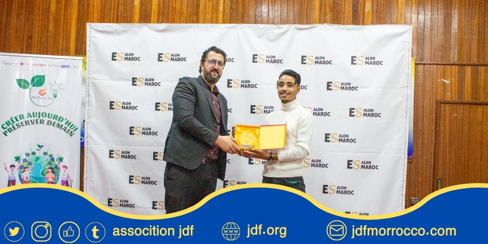
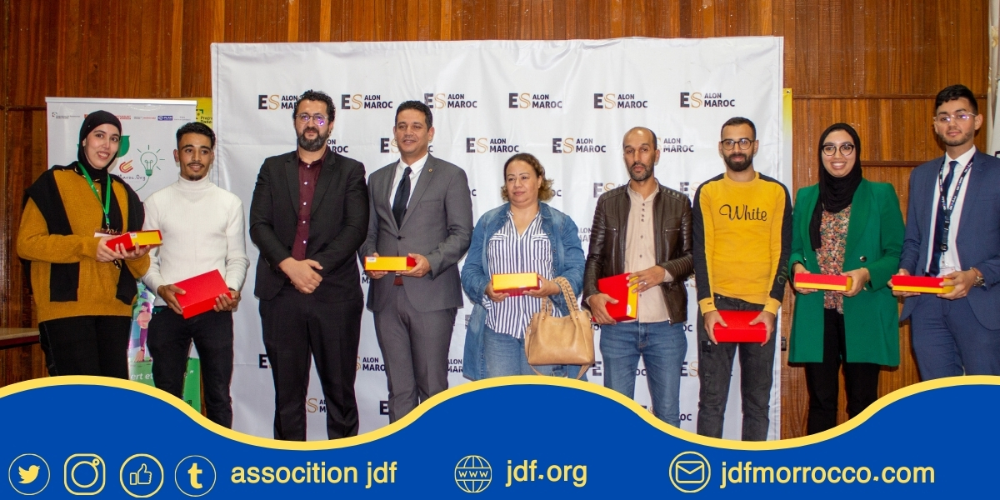
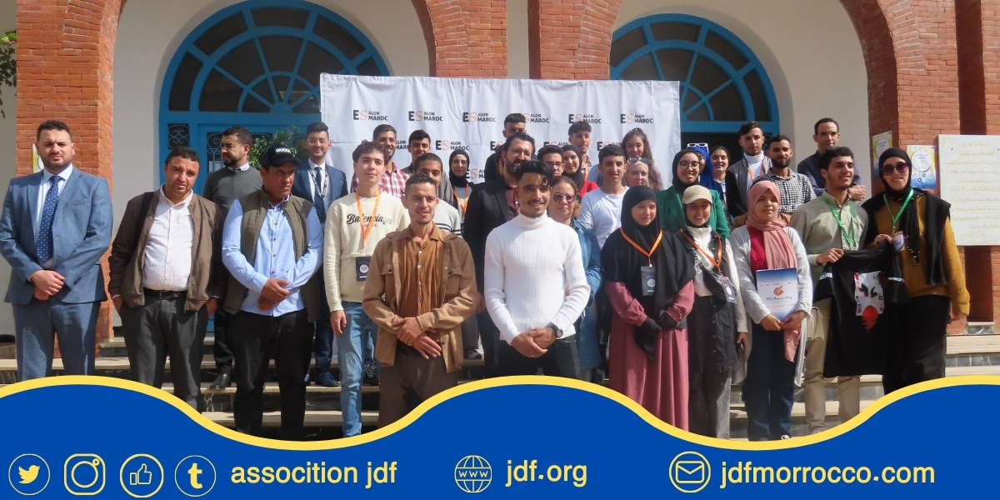

>


L'exposition Emploi de Chefchaouen ouvre de nouveaux horizons pour les jeunes de la ville L'Association de la jeunesse, en partenariat avec l'association sociale des contrats « ES Maroc » et la Direction régionale de la jeunesse, ont organisé la première exposition de l'industrie de la ville. Chefchaouen, les 24 et 25 octobre, cet événement exceptionnel permettra d'améliorer les opportunités d'emploi pour les jeunes et de suivre les idées entrepreneuriales qui souhaitent créer leur propre entreprise. L'exposition vise à créer une communication directe entre les demandeurs d'emploi, les entreprises et les institutions participantes, car elle permet aux jeunes de montrer leurs compétences et de discuter des opportunités d'emploi disponibles. à des projets réussis et influents dans la société.
en savoir plus
Association de la jeunesse, en coordination avec l‚ÄôAssociation ES Maroc, organise une formation intitul√©e ¬´ Am√©liorer les comp√©tences des jeunes pour entrer sur le march√© du travail ¬ª. La s√©ance est pr√©vue le mercredi 28 ao√ªt 2024, √† onze heures du matin, √† l'Espace M√©moire Historique de la R√©sistance et de Lib√©ration √† Chefchaouen. Ce cours vise √† doter les jeunes des comp√©tences n√©cessaires pour entrer sur le march√© du travail et am√©liorer leurs opportunit√©s de carri√®re gr√¢ce √† un ensemble d'activit√©s et de formations ax√©es sur le d√©veloppement des capacit√©s pratiques et techniques. Cr√©ateur publicitaire üíªberrady walid √âcrit par Youness elkhaldi
en savoir plus
L'Association JDF a Chefchaouen a organisé le 29 septembre 2024 un atelier de formation sur le e-commerce, sous la direction du Professeur Adel Al-Sabbar de l'Association Marocaine de l'Entrepreneuriat. L'atelier s'est tenu à la Maison des Associations de Chefchaouen à 16 heures du soir et visait à fournir des conseils pratiques sur la manière de réussir dans le domaine du commerce électronique. Photographié par Mohamad Akki et Maimoun Massan @es.maroc
en savoir plusL'Association JDf Chefchaouen a organisé une réunion avec le Président de l'Association Marocaine des Entreprises Sociales ES Maroc le samedi 7 septembre 2024 à 15 heures. Nous avons exploré les opportunités de partenariat. accroître les opportunités de compétences des jeunes et améliorer la production professionnelle et économique de la jeunesse de Chefchaouen. Photographié par Mohamed Aakki, écrit par Youness elkhaldi
en savoir plusDans le cadre de la promotion et de la publicité du Forum de l'Emploi à Chefchaouen, le président de l'Association JDF Chefchaouen a effectué une visite au Centre de Formation Professionnelle et de Promotion de l'Emploi, afin de les inviter à participer au forum et à profiter des activités du salon et des ateliers parallèles. @es.maroc https://ee-eu.kobotoolbox.org/x/15hU91Iz
en savoir plusDans lnniversaire de la Marche Verte, l'Association JDF Chefchaouen, en collaboration avec l'Espace de la Mémoire Historique de la Libération, a organisé un colloque scientifique intitulé : « La Marche Verte : Un parcours ininterrompu de créativité dans la créativité » Cette conférence a eu lieu dans les locaux de l'Espace de la Mémoire Historique de Chefchaouen. Objectifs de la conférence : Ce colloque scientifique avait pour but de mettre en lumière les dimensions politiques, sociales et culturelles de cet événement historique. Il s'agissait également de rappeler les événements politiques marquants et de souligner les réalisations de développement qui ont suivi cette initiative. La conférence visait à renforcer la conscience nationale chez les jeunes et à ancrer les valeurs de l'unité territoriale.
en savoir plus
L'Association des Jeunes pour le Développement et la Formation de Chefchaouen a tenu une réunion spéciale avec le Président de JCI Maroc afin de nouer un partenariat dans les activités et événements futurs. Au cours de la réunion, la future coopération entre l'association et JCI Maroc a été discutée et des idées ont été échangées sur la manière de promouvoir le développement local et le développement de la jeunesse dans la région de Chefchaouen. Un accord a également été conclu pour organiser des programmes de formation et des ateliers conjoints afin d'améliorer les compétences des jeunes et d'améliorer leur capacité à participer efficacement à la société. Ce partenariat constituera une étape importante vers l’atteinte des objectifs de l’association et le renforcement de son rôle dans le développement de la communauté locale.
en savoir plus